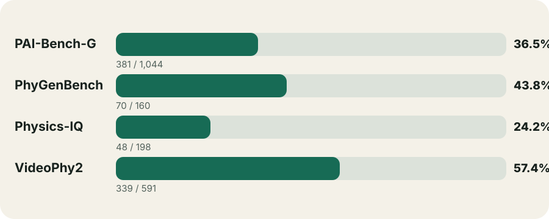

Covered samples · 42.15%
Latest recovery wave published
existing_risk_recheck_medium_low_global_breadth_nonpai_v15_20260717 checked 48 candidates: 0 strict / 48 non-pass, a 0.00% strict yield; pending PAI = 0.
existing_risk_recheck_medium_low_global_breadth_nonpai_v15_20260717 checked 48 candidates: 0 strict / 48 non-pass, a 0.00% strict yield; pending PAI = 0.
01
Why the three counts differ
840 covered samples
Benchmark samples with at least one qualifying video. This also equals the current sample-video edge count and is the primary breadth metric.
808 strict groups
Semantically equivalent samples may share a prompt group, so this count is lower than covered samples. Current group coverage is 43.49%.
777 unique videos
Verified files deduplicated by downloaded-content SHA-256. One video can serve several samples, so this is lower than the edge count.
02
Coverage by benchmark

| Benchmark | Covered | Total | Uncovered | Rate | Strict groups | Unique videos | PAI policy |
|---|---|---|---|---|---|---|---|
| PAI-Bench-G | 381 | 1,044 | 663 | 36.49% | 381 | 368 | 268 |
| PhyGenBench | 72 | 160 | 88 | 45.00% | 72 | 69 | 0 |
| Physics-IQ | 48 | 198 | 150 | 24.24% | 16 | 16 | 0 |
| VideoPhy2 | 339 | 591 | 252 | 57.36% | 339 | 331 | 0 |
| Total | 840 | 1,993 | 1,153 | 42.15% | 808 | 777 | 268 |
03
Data source and qualification
Data source is intentionally reduced to two categories: WISA80K (published-video source = wisa80k_testing_rag_v1) and Other. Samples, groups, and videos are deduplicated independently.
Data source
| Source | Samples | Groups | Videos | Sample share | Video share |
|---|---|---|---|---|---|
| WISA80K | 16 | 10 | 10 | 1.90% | 1.29% |
| Other | 824 | 798 | 767 | 98.10% | 98.71% |
Qualification mode
| Mode | Samples | Groups | Videos | Sample share |
|---|---|---|---|---|
direct_strict | 572 | 540 | 524 | 68.10% |
pai_policy_override | 268 | 268 | 262 | 31.90% |
04
Verified-video profile
Download-cohort metadata (top 12)
| incremental/batch_0004 | 451 | 58.04% |
| incremental/batch_0002 | 310 | 39.90% |
| other | 10 | 1.29% |
| round1_priority | 4 | 0.51% |
| incremental/batch_0001 | 1 | 0.13% |
| incremental/batch_0008 | 1 | 0.13% |
YouTube channels (top 12)
| unknown | 10 | 1.29% |
| Motion Array | 5 | 0.64% |
| Olympic Games | 5 | 0.64% |
| Geek Climber | 3 | 0.39% |
| People Are Awesome | 3 | 0.39% |
| Unisport | 3 | 0.39% |
| Volleyball World | 3 | 0.39% |
| WildFilmsIndia | 3 | 0.39% |
| Zack D. Films | 3 | 0.39% |
| Bundesliga | 2 | 0.26% |
| Canadian Space Agency | 2 | 0.26% |
| Daily Dose Of Internet | 2 | 0.26% |
Video categories
| 22 · People & Blogs | 196 | 25.23% |
| 17 · Sports | 129 | 16.60% |
| 26 · Howto & Style | 101 | 13.00% |
| 24 · Entertainment | 98 | 12.61% |
| 28 · Science & Technology | 69 | 8.88% |
| 27 · Education | 59 | 7.59% |
| 1 · Film & Animation | 23 | 2.96% |
| 2 · Autos & Vehicles | 22 | 2.83% |
| 19 · Travel & Events | 21 | 2.70% |
| 25 · News & Politics | 14 | 1.80% |
| 23 · Comedy | 12 | 1.54% |
| unknown · Unknown category | 10 | 1.29% |
Audio language
| en | 736 | 94.72% |
| unknown | 10 | 1.29% |
| zxx | 6 | 0.77% |
| fr | 5 | 0.64% |
| hi | 5 | 0.64% |
| ja | 3 | 0.39% |
| zh | 3 | 0.39% |
| id | 2 | 0.26% |
| ar | 1 | 0.13% |
| de | 1 | 0.13% |
| es | 1 | 0.13% |
| ko | 1 | 0.13% |
Duration buckets
| <1 min | 467 | 60.10% |
| 1–3 min | 136 | 17.50% |
| 5–10 min | 80 | 10.30% |
| 3–5 min | 69 | 8.88% |
| >10 min | 15 | 1.93% |
| unknown | 10 | 1.29% |
YouTube license
| youtube | 761 | 97.94% |
| unknown | 10 | 1.29% |
| creativeCommon | 6 | 0.77% |
Definition metadata
| hd | 727 | 93.56% |
| sd | 40 | 5.15% |
| unknown | 10 | 1.29% |
Scale
16.64 GiBpublished video bytes
24.9 htotal duration
44videos reused across samples
05
Quality funnel and active policy
9,863raw files
→
6,246base judgment rows
→
808selected strict groups
→
777unique published videos
6,246 counts prompt-video judgment rows in the base scheduler. It is neither a unique-video count nor inclusive of the independent recovery/recheck history.
Under the user's instruction, PAI-Bench-G uses
accept_base_strict_without_supplemental_review; no extra PAI re-review is required.
The policy currently preserves 268 covered samples.
It overrides 383 historical revocation rows, while 5 non-PAI revocations remain enforced.
730base approved pair judgments
78recovery strict promotions
5,516rejected pair judgments
692groups exhausted after five non-passes
06
Remaining gaps and next steps
1,153 samples and 1,050 prompt groups remain uncovered.
The next phase remains breadth-first: obtain the first strict video for more uncovered samples before adding redundancy to already-covered samples.
PAI-Bench-G does not enter a supplemental-review queue; it only needs candidates that satisfy the base strict physical-process match.
663PAI-Bench-G
252VideoPhy2
150Physics-IQ
88PhyGenBench
07
Snapshot and reproducibility evidence
Every published edge is strict; the complete-sample set exactly equals the edge set; and every edge content SHA-256 exists in videos.jsonl. No absolute local path, video file, or credential is exported in this report.
- Generation
v1-7ff5da8cbab87b51-1408545-1784279368549135500- Quality DB SHA-256
7ff5da8cbab87b512d859337ce099f3713a62ed3c7ee1cf0bbd9730d091ae414- Stats SHA-256
3b6a2722ad524a9bc4d233b1e47d0c91a170fc6a8d32e89289c2d08ff293aaa3- Report generated
2026-07-17T09:13:03.615926Z